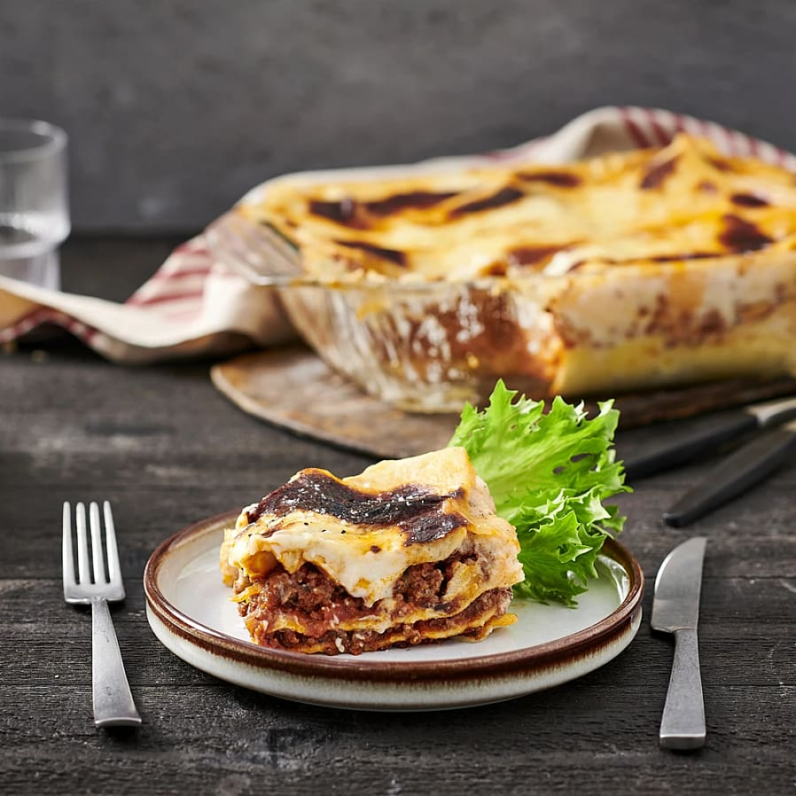

Lasagna

Classical Lasagna
Classic lasagna is a dish you never get tired of, is it? With this recipe, your lasagne will be perfect with a
soft and delicious texture and it also has a sweet and exemplary taste. The Parmesan cheese is the icing on the
cake!
Ingredients for 4 portions
- 2 Onions
- 2 Cloves of Garlic
- 500g of Minced meat
- 1tbs of Olive oil
- 4tbs of Tomato puré
- 1tsp of Thyme
- 1tsp of Rosemary
- 500g of Crushed tomatoes
- 1 cube of Beef broth
- Salt and pepper
- 9 Plates of lasagna
Sauce
- 6tbs of Shortening
- 6tbs Flour
- 1L of Milk
- Salt and pepper
- 2dl of Parmesan
Cooking Instructions
- Set the oven to 175°C.
- Peel and chop the onion and garlic. Fry minced meat, onion and garlic in the oil in a frying pan. Add tomato
puree that can be minced with the minced meat. Season with thyme and rosemary. Add crushed tomatoes and
bouillon cubes, let it cook for about 10 minutes. Season with salt and pepper.
- Sauce: Melt the shortening and stir in the flour. Dilute with the milk while whisking. Let the sauce cook
for about 5 minutes. Season with salt and pepper.
- Wrap sauce, lasagne plates and minced meat sauce in an ovenproof dish. Finish with sauce and parmesan
cheese.
- Put the lasagna in the middle of the oven for about 40 minutes.
- To serve: Serve the lasagna with salad.
Back to homepage